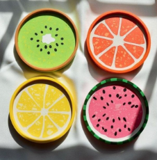
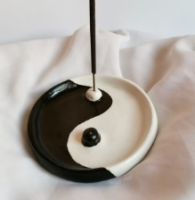
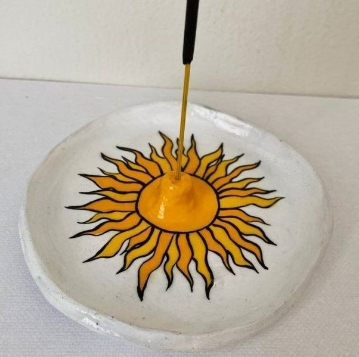

Porte-encens
Nosotros
Productos
Servicios
Redes
✧･ﾟ: Nuestros Productos :･ﾟ✧
Un objeto decorativo y funcional que combina la tradición y la espiritualidad. Es una pieza de porcelana fría con forma de cilindro, adornada con patrones geométricos y colores brillantes, contando en la parte superior con un pequeño orificio para colocar el sahumerio. Al quemar el sahumerio, el aroma se difunde mientras el ojo turco parece "mirar" hacia afuera, protegiendo el espacio y a sus ocupantes de energías negativas. Es una pieza única que combina belleza y significado espiritual. Diámetro: 5cm.

Una pieza fresca y elegante que captura la esencia de la fruta a través de su forma redonda, la cuál imita la forma del alimento. La porcelana fría de alta calidad presenta un acabado brillante y texturizado, con tonos brillantes. Un pequeño orificio en la parte superior libera el aroma del sahumerio, creando un ambiente refrescante y relajante. Un accesorio perfecto para cualquier espacio, combinando la naturaleza y la espiritualidad con un toque de frescura y vitalidad. Diámetro: 5cm.

Una pieza simbólica y elegante que combina la armonía y el equilibrio. Su forma circular presenta dos secciones interconectadas, representando los principios opuestos y complementarios del Yin y el Yang. La porcelana fría de alta calidad presenta un acabado suave y brillante. Posee un pequeño orificio en el centro donde se libera el aroma del sahumerio, creando un ambiente pacífico. Diámetro: 5cm.

Un objeto que brilla con luz propia, perfecto para darle un toque brillante a tu hogar. En forma circular con un fondo blanco para darle mayor color al sol, presente en el centro de la pieza, con un hermoso color y brilloso amarillo. Posee un orificio en su centro permitiendo colocar el sahumerio y así, liberar tu aroma favorito. Diámetro: 5cm.